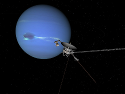
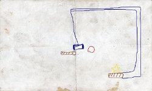
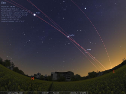
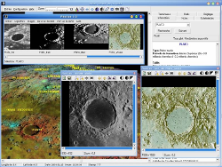

Guadalinex v5 - Software Libre
| Programa: | Celestia 1.5.1 |
|---|---|
| Web: | http://www.shatters.net/celestia/ |
| Instalador: | Instalar |
|  | Celestia es un software planetario, que nos posibilita explorar el Universo en tres dimensiones, simular viajes a través de nuestro sistema solar, viajar a más de 100.000 estrellas de la Vía Láctea o incluso fuera de nuestra galaxia. Celestia incluye un catálogo de estrellas, de galaxias, de planetas, de lunas, de asteroides, de cometas, y naves espaciales. Si este no es bastante, puedes descargar (e incluso disenar) gran cantidad de nuevos objetos, reales o imaginarios, y agregarlos fácilmente. |
| Programa: | Numpty Physics 0.2 |
|---|---|
| Web: | http://numptyphysics.garage.maemo.org/ |
| Instalador: | Instalar |
|  | Numpty Physics es un juego aparentemente muy simple: hay que llevar la pelota roja a la estrella amarilla. Sin embargo, es algo mucho más entretenido de lo que parece. Basándose en el Crayon Physics, tenemos que dibujar un entorno a base de rampas, palancas, muelles para lograr nuestro objetivo. |
| Programa: | Stellarium 0.10.2 |
|---|---|
| Web: | http://www.stellarium.org/es/ |
| Instalador: | Instalar |
|  | Stellarium es capaz de mostrar un cielo realista en 3D, tal como se aprecia a simple vista, con binoculares o telescopio. Actualmente se ha implementado en domos planetarios. |
| Programa: | Virtual Moon Atlas 35c |
|---|---|
| Web: | http://www.ap-i.net/avl/en/start |
| Instalador: | Instalar |
|  | Este software permite visualizar la superficie de la Luna para estudiarla, con una base de datos de más de 8000 entradas y 6000 fotografías reunidas por Christian Legrand. Podemos ampliar cualquier accidente geográfico y consultar la información disponible, preparar simulaciones, o buscar puntos de interé en la superficie. En la web está disponible una traducción al castellano, e incluso una versió ampliada con mayor calidad de imágenes e información adicional. |